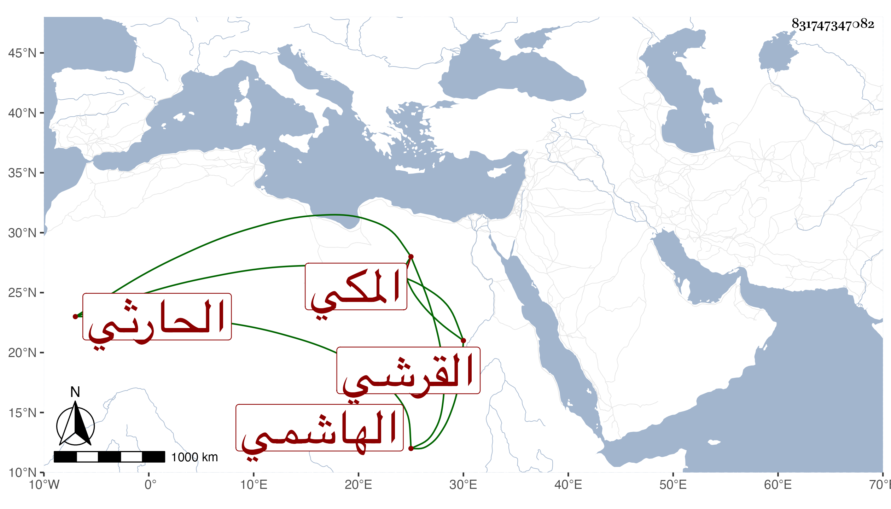

0902Sakhawi.DawLamic.ITO20230111-ara1.EIS1600.831747347082
Biography ID: 831747347082
155
أبو بكر بن علي بن موسى بن قريش الفخر القرشي الهاشمي الحارثي المكي . ولد بها في رمضان سنة إحدى عشرة وثمانمائة وقال أنه زار النبي صلى الله عليه وسلم وأحضر على أبي بكر بن الحسين المراغي فكان خاتمة أصحابه بالحضور وكان خصيصا بالنجم بن فهد أجاز في سنة إحدى وتسعين . ومات في جمادى الثانية سنة خمس وتسعين .
